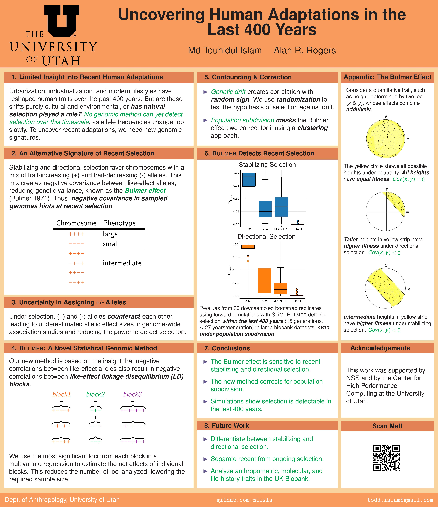

I'm a Ph.D. student in Anthropological Genetics at the University of Utah, specializing in developing statistical methods to identify ancient and modern adaptations. My research integrates population and statistical genetics with large-scale genomic data to uncover evolutionary patterns and genetic influences on complex traits.
My work focuses on detecting selection, gene-environment interactions, and polygenic risk prediction using GWAS and biobank datasets.
Here are some of my research projects:
Click on the preview to view the full poster.
Email: todd.islam@example.com
GitHub: github.com/mtisla
LinkedIn: linkedin.com/in/mtisla